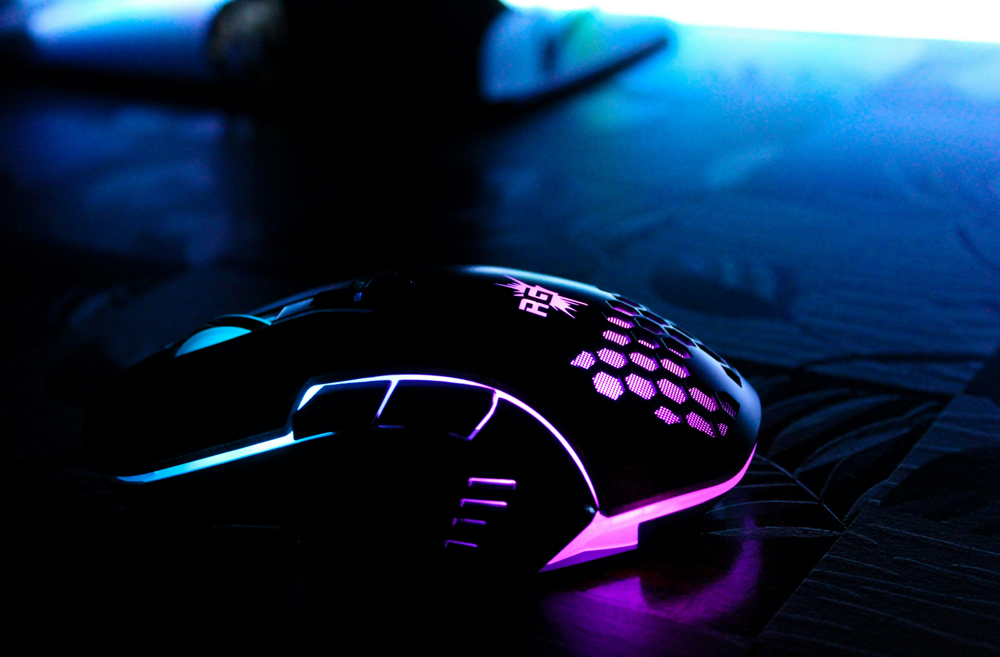

Performance tests, pros/cons, specs, and whether it’s worth your money.
The Logitech G Pro X Superlight 2 is the most used competitive mouse in 2026. With a 40g ultralight shell, next‑gen HERO 2 sensor, and flawless wireless latency, it delivers the fastest and most consistent performance in the industry.
Most gaming mice feel heavy or inconsistent over long sessions. The Superlight 2 uses hybrid PTFE feet and a friction‑less shell design that glides effortlessly, giving you pixel‑perfect control in FPS titles like Valorant, Apex, and CS2.
With a 4.8‑star average, players praise its insane weight reduction, flawless tracking, and tournament‑ready reliability. The only critique is the premium price — but pros say it’s worth every dollar.
| Feature | Details |
|---|---|
| Sensor | Logitech HERO 2 (32,000 DPI) |
| Connectivity | LIGHTSPEED Wireless, USB‑C |
| Weight | 40g |
| Battery Life | 95 hours |
| Buttons | 5 programmable |
| Feet | Hybrid PTFE |
The Logitech G Pro X Superlight 2 is the definitive gaming mouse of 2026. Its combination of weight, sensor performance, and wireless reliability makes it unbeatable for competitive players. If you want the fastest, most consistent mouse available, this is the one.
Upgrade your aim with the most reliable competitive mouse of 2026.
Check Price on Amazon